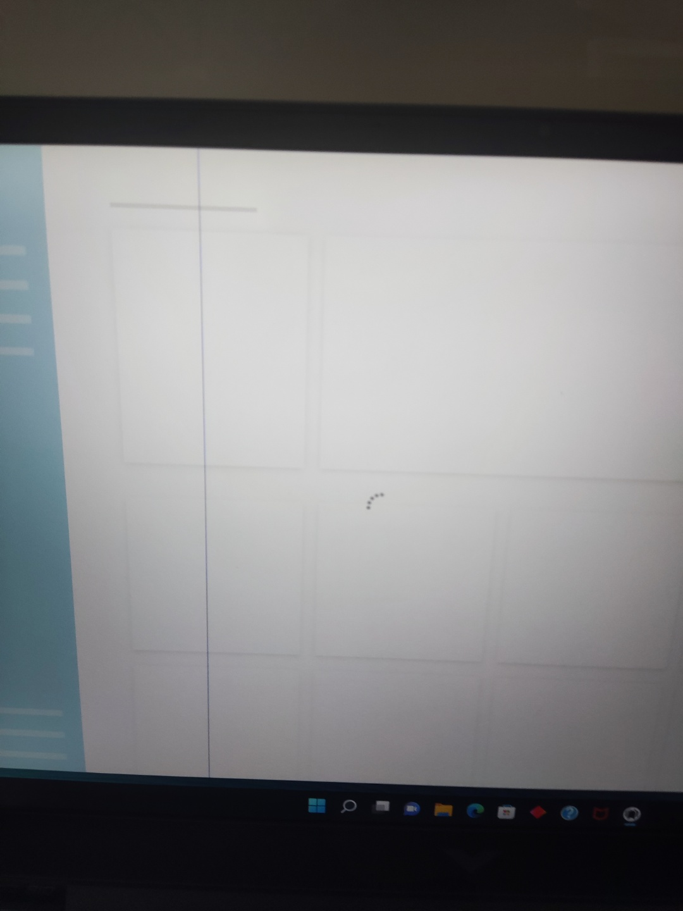
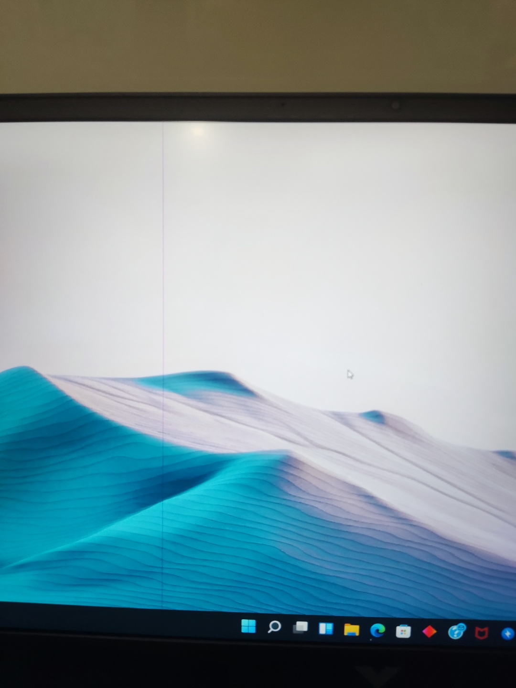

It comes with laptop and adaptor.
 
A single blue line appears on the screen as shown in the picture.
This is a bad display. Exchange results from contacting HP is possible,
but it will take time. It does not affect performance, and there is no
discomfort when viewing the screen.
At the time of purchase, the laptop was in need immediately, so I did not
exchange it.
Fortunately, the warranty is guaranteed until March 2023.